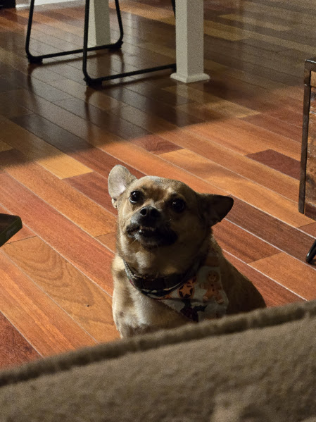

I’m a computer science major. I enjoy working on creative projects and learning new technologies that make life more interactive and efficient. In my free time, I like to learn new stuff by reading and taking notes. I also like designing circuit boards and studying music theory.
Here are some useful links I often visit:
| Cell Type | Description | More Info |
|---|---|---|
| Eukaryotes | Organisms whose cells have a membrane-bound nucleus | Nature Article |
| Prokaryotes | A single-celled organism whose cell lacks a nucleus and other membrane-bound organelles | Sciencedirect Article |
In HTML you can use symbol shortcuts like ♥(&hearts) and ∞(&infin). What's also cool is that you can access Emojis on windows using the WIN + . keyboard combination. I never knew that until recently.
Here's a funny photo I took of my dog Maisie:
Our family had a DNA test done on her, and we found out she's a chihuahua/pomeranian mix. She has a face for radio.